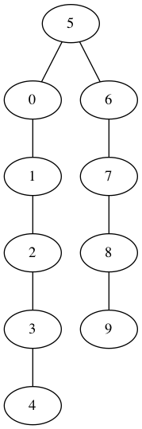
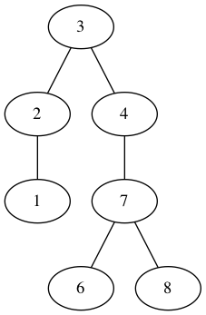

gotree 


gotree provides tree visualizing tools and algorithm implementations.
- Getting Started
- Package Hierarchy
- What is Tree? (YouTube Clips)
- Example : Binary Search Tree
- AVL Tree
- Example : AVL Tree
- To-Do-List
- Other
Getting Started
// to install, in the command line
mkdir $HOME/go
export GOPATH=$HOME/go
go get github.com/gyuho/gotree
// to include, in the code
import "github.com/gyuho/gotree"
// to call the function, in the code
[package_name].[function]
// to execute
go install
// or
go build
Package Hierarchy
tree/ # Tree Data Structure
bst/ # Binary Search Tree
bstviz/ # Visualization (Graphviz)
avl/ # AVL Tree
avlviz/ # Visualization (Graphviz)
example/ # Example Code
What is Tree? (YouTube Clips)

Example : Binary Search Tree
tr := bst.NewTree(5)
for i := 0; i < 10; i++ {
if i != 5 {
tr = tr.Insert(int64(i))
}
}
Show(tr, "tree1.dot")

tr := bst.NewTree(5)
tr.Inserts(7, 8, 5, 4, 2, 1, 6, 3)
Show(tr, "tree2.dot")

tr := bst.NewTree(5)
tr.Inserts(7, 8, 5, 4, 2, 1, 6, 3)
tr.Delete(int64(6))
Show(tr, "tree3.dot")

tr := bst.NewTree(5)
tr.Inserts(7, 8, 4, 2, 1, 3)
tr.Delete(int64(7))
Show(tr, "tree4.dot")

tr := bst.NewTree(5)
tr.Inserts(7, 8, 3, 4, 2, 1, 6)
tr = tr.Delete(int64(5))
Show(tr, "tree5.dot")

AVL Tree
AVL tree is a self-balancing binary search tree.
For lookup-intensive applications, AVL trees are faster than red-black trees because they are more rigidly balanced. Similar to red-black trees, AVL trees are height-balanced. Both are in general not weight-balanced
It is basically a Binary Search Tree (BST) with additional balancing property:
Height of the Left Sub-Tree and Height of the Right Sub-Tree differ by at most 1
Balance(Tree) = Height(Left) - Height(Right) = -1, 0, 1
For example,
1
/ \
2
/ \
3 4
The node 2 is balanced, but the node 1 is NOT balanced because the Height(Left) is 0 and Height(Right) is 2
Insertion
- Insert into Left-Sub of Left-Child
- Insert into Right-Sub of Right-Child
- Insert into Left-Sub of Right-Child
- Insert into Right-Sub of Left-Child
Rotation for Re-balancing
- LL Rotation
- RR Rotation
- LR Rotation
- RL Rotation
Rebalance (Rearrange)
LL Rotation
Unbalanced!
4
/
3
/
2
then
3
/ \
2 4
RR Rotation
Unbalanced!
6
\
7
\
8
then
7
/ \
6 8
LR Rotation
Unbalanced!
4
/
2
\
3
then
3
/ \
2 4
RL Rotation
Unbalanced!
6
\
8
/
7
then
7
/ \
6 8
Determine which rotation to use
-
Height(Unbalanced-Node)is:-
Positive: Left-Child (Example Height = 2)
- If
Height(Left-Child)is:- Positive:
LL Rotation(Example Height = 1) - Negative:
LR Rotation(Example Height = -1)
- Positive:
- If
-
Negative: Right-Child (Example Height = 2)
- If
Height(Right-Child)is:- Positive:
RL Rotation(Example Height = 1) - Negative:
RR Rotation(Example Height = -1)
- Positive:
- If
-
Positive: Left-Child (Example Height = 2)
Example : AVL Tree
func Test_avlviz(test *testing.T) {
tr := avl.NewTree(4)
tr.BalanceInsert(6)
tr.BalanceInsert(5)
avlviz.Show(tr, "avl-before.dot")
tr.BalanceRL(5)
avlviz.Show(tr, "avl-after.dot")
}
Before
After
func Test_Show25(test *testing.T) {
// Left Left Case
tr1 := avl.NewTree(13)
tr1.TreeInserts(5, 17, 3, 10, 4, 2)
Show(tr1, "avl_balanced_25.dot")
// Left Right Case
tr2 := avl.NewTree(13)
tr2.TreeInserts(5, 17, 3, 10, 12, 9)
Show(tr2, "avl_balanced_26.dot")
// Right Right Case
tr3 := avl.NewTree(7)
tr3.TreeInserts(4, 12, 8, 15, 17, 13)
Show(tr3, "avl_balanced_27.dot")
// Right Left Case
tr4 := avl.NewTree(7)
tr4.TreeInserts(4, 12, 9, 15, 8, 10)
Show(tr4, "avl_balanced_28.dot")
}
To-Do-List
Non-Committal on a Timeline
- Tree Deletion
- More Tree Data Structures
Other
- Data Structure Projects
- GoLLRB by Petar Maymounkov (Left-Leaning Red-Black Tree)
- File Structures (B+Tree, BTree) by Tim Henderson
- btree-go by Sankar (B-Tree)